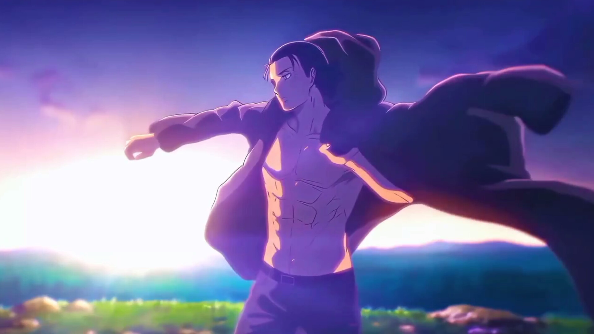
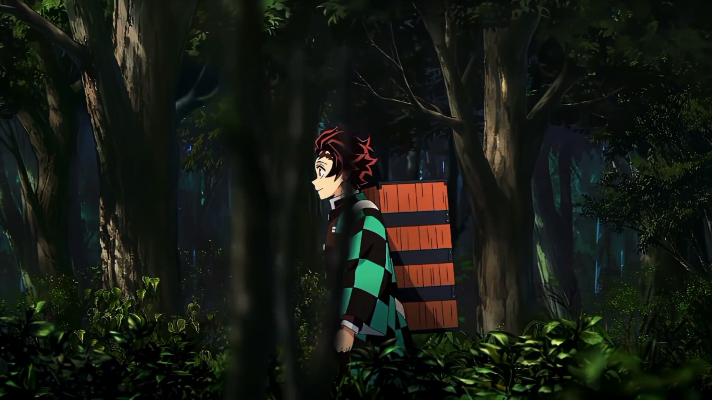
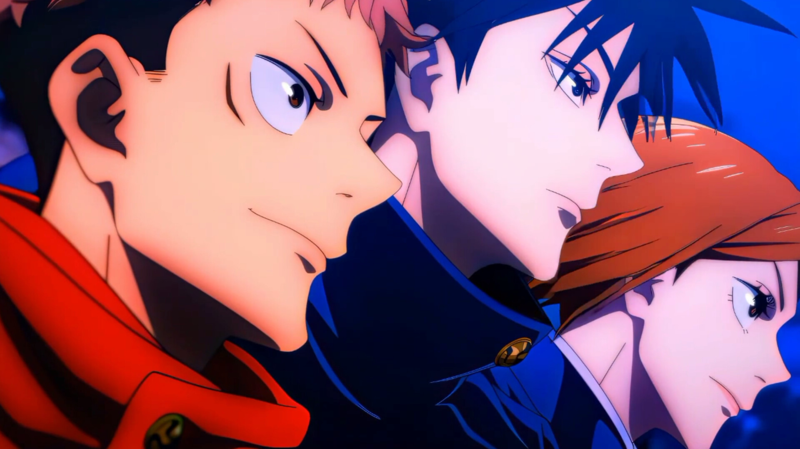
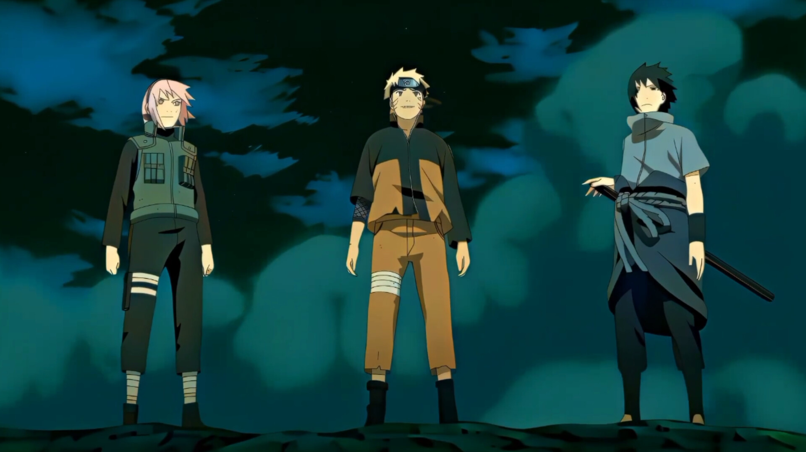
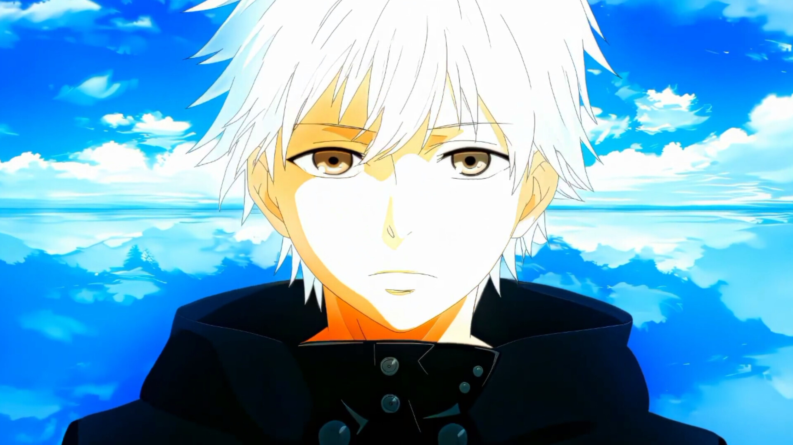

Bleach
Follow Ichigo Kurosaki as he becomes a Soul Reaper and protects the living world from Hollows while uncovering the mysteries of the Soul Society.
⚔️ Action • Supernatural • Adventure • ⭐ 8.2/10 • 366 Episodes
Attack on Titans
Humanity fights for survival behind massive walls as Eren Yeager and his friends battle terrifying Titans and uncover the truth behind their world.
🛡️ Action • Dark Fantasy • Drama • ⭐ 9.1/10 • 94 Episodes
Demon Slayer
Tanjiro Kamado joins the Demon Slayer Corps to avenge his family and find a cure for his sister Nezuko after she is turned into a demon.
🔥 Action • Fantasy • Adventure • ⭐ 8.6/10 • 63 Episodes
Jujutsu Kaisen
Yuji Itadori enters the world of Jujutsu Sorcerers after consuming a cursed object, battling powerful curses to protect humanity.
👹 Action • Supernatural • Fantasy • ⭐ 8.5/10 • 47 Episodes
Naruto
Naruto Uzumaki dreams of becoming the Hokage while overcoming loneliness, mastering ninja techniques, and protecting his village.
🍥 Action • Adventure • Shōnen • ⭐ 8.4/10 • 220 Episodes
Tokyo Ghoul
Ken Kaneki's life changes forever after becoming half-ghoul, forcing him to navigate the dangerous conflict between humans and ghouls.
🩸 Dark Fantasy • Horror • Action • ⭐ 7.7/10 • 48 Episodes